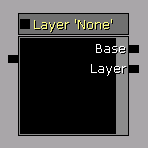
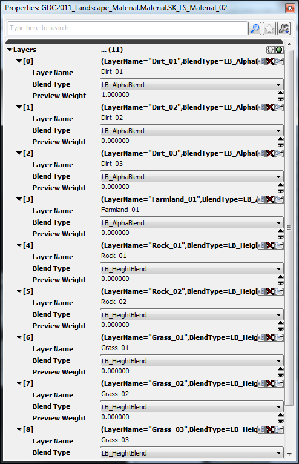
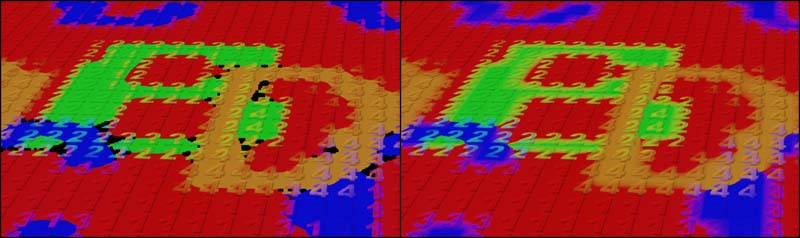
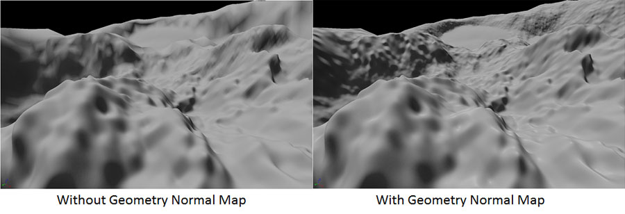
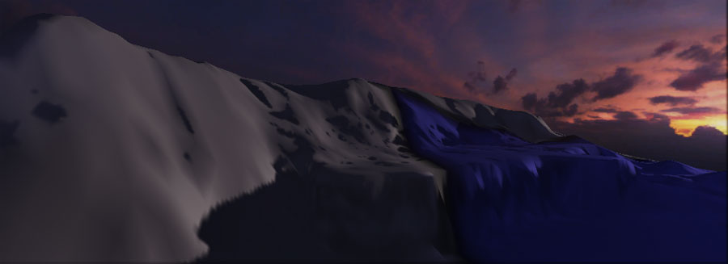
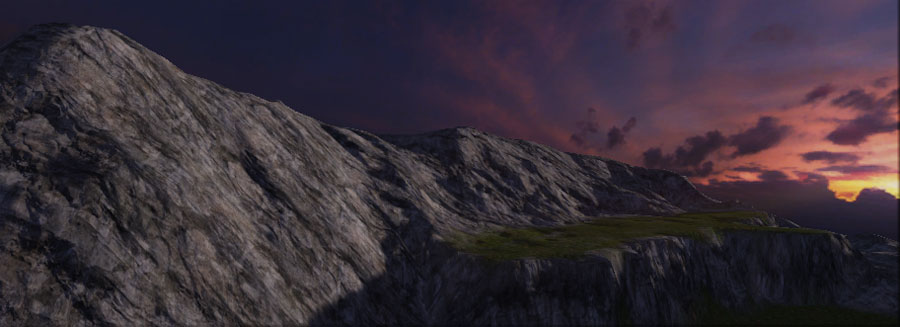

UDN
Search public documentation:
LandscapeMaterialsCH
English Translation
日本語訳
한국어
Interested in the Unreal Engine?
Visit the Unreal Technology site.
Looking for jobs and company info?
Check out the Epic games site.
Questions about support via UDN?
Contact the UDN Staff
日本語訳
한국어
Interested in the Unreal Engine?
Visit the Unreal Technology site.
Looking for jobs and company info?
Check out the Epic games site.
Questions about support via UDN?
Contact the UDN Staff
景观材质
概述
创建景观材质
层混合
混合层的功能是给Landscape（景观）地形赋以贴图的基础。它的工作方式和Unreal中以前的地形系统类似。但是，Landscape系统在材质方面的实现是不同的。 要想设置将景观层混合到一起的功能，需要使用一系列的 TerrainLayerWeight 表达式。每个表达式必须在 Parameter Name（参数名称） 属性中指定景观地形中相关层的名称。对于第一个层，您可以让 Base(基础) 输入保持默认状态，但是对于后续的层来说，需要把第一个层的输出连接到第二各层的Base端，以此类推。 在底层，这些节点的行为和静态开关参数类似。景观的每个组件都有它自己的MaterialInstanceConstant (材质实例常量)，该MaterialInstanceConstant 从应用到那个组件的主要景观材质创建而来。如果一个特定的层没有应用到特定的景观组件上，那么连接到那个层上的节点子树将会被忽略。这降低了整体复杂度，从允许应用到景观上的材质包含任何数量的贴图，只要在任何单独组件上所应用的样本的数量没有超过着色器模型规格说明(SM 3.0设置为16)事先设置的最大值即可。这意味可以设置一个包含景观上任何地方所应用的每个贴图或网络的主要材质，它最终成为一个非常复杂的网络集合，但仍然保持最终材质应用到硬件允许的参数中景观的组件中。 以下是个景观材质设置示例，用于混合景观的4个层的漫反射颜色。 注意: 您可以通过改变 TerrainLayerWeight 节点的 Preview Weight(预览权重) 属性来预览不同权重对材质的影响效果。 TerrainLayerCoords(地形层坐标) 节点用于指出景观层的贴图的平铺、缩放等参数。
当然，任何表达式网络都可以连接到 Layer 输入端来代替简单的 TextureSample 。这使得创建更复杂的效果成为可能，比如根据看到景观层的远近情况从细节贴图变换到较大的宏观贴图。
这种混合方法的一个替代方法是使用LandscapeLayerBlend节点(请参照下文)。
注意: 您可以通过改变 TerrainLayerWeight 节点的 Preview Weight(预览权重) 属性来预览不同权重对材质的影响效果。 TerrainLayerCoords(地形层坐标) 节点用于指出景观层的贴图的平铺、缩放等参数。
当然，任何表达式网络都可以连接到 Layer 输入端来代替简单的 TextureSample 。这使得创建更复杂的效果成为可能，比如根据看到景观层的远近情况从细节贴图变换到较大的宏观贴图。
这种混合方法的一个替代方法是使用LandscapeLayerBlend节点(请参照下文)。
层/权重和顺序
Landscape(景观)使用权重混合而不是alpha混合，所以在任何位置所有层的混合因数都将达到1.0。这样做的优点是不依赖于顺序 - 您可以在任何时候描画任何层，并增加该层的权重及降低其他现有层的权重。缺点是当完全地100%描画一个层时，其他所有层的权重值将都是0%。当在一个100%描画的层上应用取消描画工具时，这个效果是显而易见的。该工具不知道使用其他的哪个层来代替您正在删除的层。景观材质表达式
Terrain Layer Weight（地形层权重）
TerrainLayerWeight表达式允许基于从应用材质的景观获得相关层的权重混合材质网络。
属性- Parameter Name(参数名称) - 属于和这个表达式相关的景观的层的名称。这个层的权重用作为混合两个输入网络的alpha值。
- Preview Weight(预览权重) - 在材质编辑器中处于预览目的所示使用的权重。
- Base（基础） - 和相关层相混合的网络。这一般是前一个层混合的结果，但是如果这个层是第一个层，该项将为空。
- Layer(层) - 相关层要混入的网络。
- 输出 Base 和 Layer 输入之间基于所涉及的层的权重进行混合后的结果。
Terrain Layer Coords(地形层坐标)
TerrainLayerCoords表达式生成可以将材质网络映射到Landscape地形上的UV坐标。 属性
属性
- Mapping Type(映射类型) -
ETerrainCoordMappingType指定了当将材质(或网络)映射到Landscape（景观）上时所使用的方位。 - Mapping Scale(映射比例) - 应用到UV坐标的统一比例。
- Mapping Rotation(映射旋转度) - 应用到UV坐标的旋转度，以度数为单位。
- Mapping Pan [U/V](映射平移[U/V]) - 在[U/V]方向上应用到UV坐标的偏移量。
- 根据给定的属性值输出映射材质到Landscape（景观）所使用的UV坐标。
Terrain Layer Switch（地形层开关）
(自2011年11月份的版本开始提供该功能） 当某个特定的层不影响景观的某个区域时，TerrainLayerSwitch允许您去除某些材质操作。当某个特定层的权重是0时，这允许您通过删除不必要的计算来优化您的材质。 Inputs(输入)
Inputs(输入) - LayerUsed(使用的层) - 当景观的当前区域正在使用节点属性中指定的层时要使用的结果。
- LayerNotUsed(未使用的层) -当景观的当前区域没有使用该层且该层的权重为0时要使用的结果。
- 根据该层是否对景观的特定区域产生影响来选择使用 LayerUsed 或 LayerNotUsed 输入端。
景观层混合
(自2011年11月份的版本开始提供该功能） 作为使用TerrainLayerWeight节点手动混合层的可替换方法，LandscapeLayerBlend节点通过使用alpha混合或基于高度偏移的alpha混合来混合多个层。基于高度偏移的alpha混合允许一个层基于高度图输入和其它层进行混合。在没有使用某些层的区域中，会自动将这些层优化删除掉，不会对着色器造成影响。 Inputs(输入)
Inputs(输入) - 每个层为将要混合到一起的层添加一个输入端。
- LB_HeightBlend blended 层(参照下面)也有一个高度输入。
- 层混合到一起后的结果。
- Layer Name(层名称) - 这个名称和景观编辑模式窗口中使用的层名称一致。
- Blend Type(混合类型) - LB_AlphaBlend 或LB_HeightBlend。这些类型在以下部分进行了介绍。
- Preview Weight(预览权重) - 这是在材质编辑器中用于预览混合效果的层的权重值。
 以下是多个层混合到一起的属性的示例，和上面显示的节点相对应：
以下是多个层混合到一起的属性的示例，和上面显示的节点相对应：

关于多个LB_HeightBlend层的注意事项
LB_HeightBlend通过使用指定的高度值来调制图层的混合因数(权重)来进行工作。因为所有的权重加起来必须等于1.0，所以同时描画的其他图层将会增加它们的权重来进行弥补。当您在一个区域描画多个层且它们都使用LB_HeightBlend时，可能在该特定区域描画的所有层的高度值都同时是0，所以每个层所需的混合因数都变为0。因为没有隐式或显式的顺序，所以结果将呈现黑色的污点，因为任何层都没有产生效果。当您混合一个法线贴图时，这种情况会变得更糟，因为它会导致无效的法线值 (0,0,0)，从而导致光照的数学计算问题。这个问题的解决方案是让其中的一个层使用LB_AlphaBlend。这样，将总有一个非零的混合因数存在。
在左边的图片中，所有的层都是LB_HeightBlend，导致某些区域是黑色的。在右边的图片中，红色的“1”图层改为使用LB_AlphaBlend，便解决了这个问题。几何法线贴图
*注意： 自从201年5月份的版本后，将会基于每个像素自动地采样几何体法线贴图，不需要任何额外的材质节点来获得依赖于LOD的高分辨率光照。如果使用2011年5月之前的版本，则仅需要以下信息。当更新到2011年5月份或之后的版本时，请确保从任何景观材质中撒谎拿出Heightmap(高度图)采样节点。 * 通过在材质中对高度图贴图采样，您可以基于每个像素访问几何法线信息。这使得当景观的在LOD距离之外时仍然能产生一致的高分辨率的光照。
景观分配那个高度图贴图作为 Heightmap(高度图) 的参数。几何法线贴图是作为世界空间法线向量存储的，该向量的X和Y组件存储在高度图贴图的Blue和Alpha通道中。我们需要使用几个材质节点来生成Z向量，适当地偏移它，然后在我们将其作为法线贴图使用之前将其从世界控件变换到向量空间。 实现上述操作的节点如下所示。在 Engine\Content\EditorLandscapeResources.upk包中的LandscapeLightingMaterial材质中有一个关于这个处理的示例。 您可以使用和先前连接到Normal输入端设置类似的层混合结构来混合多个层的法线贴图及将几何体法线贴图混合到一起。
您可以使用和先前连接到Normal输入端设置类似的层混合结构来混合多个层的法线贴图及将几何体法线贴图混合到一起。
细分和位移
材质的TessellationFactors和WorldDisplacement通道和可以和景观地形结合使用来提供额外的细节和变形。这些处理的工作方式和这些通道同其他任何标准材质结合使用时一样，层混合可以同这些通道结合使用,就像和Diffuse、Normal或其他任何通道协同使用一样。分配材质给景观

分配材质的处理可以直接在Landscape actor的属性中完成，通过 Landscape 类别中的Landscape Material 属性。简单地在内容浏览器中选择该材质然后按下  按钮来分配材质。
按钮来分配材质。

